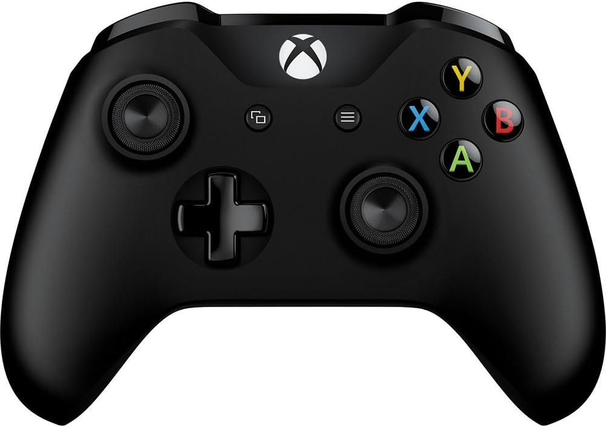

Accesories
There are a bunch of accessories, heres a list, picture, what it does, and price of each item.
| Accessory | What it Does | Price | Picture |
|---|---|---|---|
| Controller | Controllers you game, you kind of need this if you want to play your Xbox | Around $70 |  |
| Stereo Headset Adapter | This is for when you play online and you have a microphone. This can mute you, turn up and down your volume, and to change your in game volume or chat volume. | Around $24 |  |
| Keyboard | Did you know, you can connect a keyboard and mouse to your Xbox? Well now you know. You can only play some games wit ha keyboard and mouse, but you can control everything in the Xbox Home with a keyboard, just not a mouse. | $20-$80 | |
| Mouse | Going back to the keyboard, you can't control your Xbox with a mouse. The mouse is only avaliable for some games, not every game. | $20-$60 |  |
| Headset | The really cool thing about Xbox Controllers is that if you plug in headphones or a headset, you can hear your game through your controller. You don't connect it to your Xbox, you connect it through your controller which is super cool. The headset is for audio, music, and for voice chat. If you want, you can just use your tv's or monitor's sound, you just wouldn't be able to use voice chat. | $20-$60 | |
| Headset Stand | This is for holding your headset, this is really a big deal, its just handy. | $9-$50 |  |
| Xbox Stand | This is for holding your Xbox so it doesn't fall over and break. Some stands have a cooling fan and some don't. It doesn't really matter what you have, and you should only get a stand if you want to stand your Xbox vertically. If you dont, then don't buy one, it would be a waste of money. | $20-$70 |  |
| Xbox Cooling Fan | This is like the best thing ever. You can play longer, not have lag at all, and not overheat your Xbox. This is so helpful, you should for sure get this. | $20-$25 |
These are a bunch of the top rated accessories, there a for sure more, these are just the biggest ones.